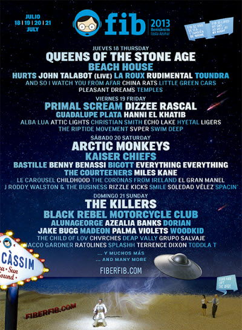

DONDE ESTÁ Y CÓMO LLEGAR
La renacida Benicàssim, la que hoy conocemos, le debe tanto a su sol y a sus playas como a Oasis y a Leonard Cohen; tanto a su peculiar orografía, salpicada de cuevas, riscos y simas, como a la magia de Björk o al aullido de Jon Spencer; tanto al desierto de Las Palmas como al recinto de conciertos del Festival. Benicàssim hoy no se entiende sin FIB.
El Recinto está ubicado en la carretera N-340, kilómetro 986,300.
Salida a 12 km al norte de Castellón
Desde Barcelona: Autopista AP-7, salida 45
Desde Valencia: Autopista AP-7, salida 46
Coordenadas: 40.048068N, 0.047872E.
pagina official